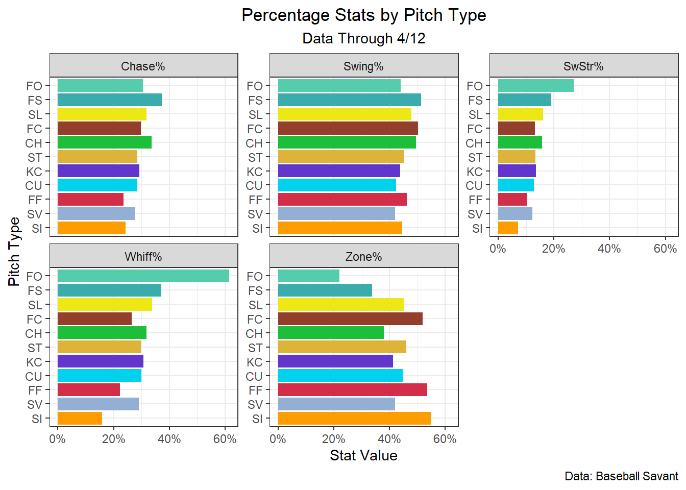

R is an awesome tool with a relatively small learning curve, and through the efforts of a lot of awesome people, there is a massive collection of resources to learn R (for free!). This tutorial is for those who are already familiar with R, but if you’re a beginner, I can’t recommend R4DS enough. It is a perfect guide for beginners, and especially emphasizes use of the tidyverse, which makes the entire data science process and workflow far more intuitive and uniform. Now, on to the tutorial!
Load in Packages
For this analysis, you’re going to need a few packages. The {tidyverse} is essential for every project and includes packages for data manipulation, visualization, and more. Additionally, the {baseballr} package lets us scrape Statcast data directly from the MLB API into our R session. Lastly, the {gt} and {gtExtras} packages help us easily build presentable tables and the {mlbplotR} package makes it easy to incorporate MLB logos and headshots into our plots an tables.
Load in Data
Next, let’s load in our data. For this tutorial, we’re going to scrape the first two-ish weeks of the 2023 season.
data1<-statcast_search( start_date ="2023-03-30", end_date ="2023-04-04", type ="pitcher")data2<-statcast_search( start_date ="2023-04-05", end_date ="2023-04-11", type ="pitcher")mlb_data<-data1%>%bind_rows(data2)rm(data1, data2)dim(mlb_data)
[1] 50567 92
# You can also run View(mlb_data) to open up the data in a tab if you are# using the RStudio IDE
The dim() function tell us that our dataframe has 46,042 rows of 92 different variables. You can look at the different columns and the type of data they store with the str() function.
Add Data
We need to create some additional columns that will easily let us summarize our data, and this is pretty easy with the dplyr::mutate() + dplyr::if_else() combo. The description column of our data has info on what events happened on each pitch, so let’s create some binary indicators using this column that tell us if different events like a swing, whiff or chase happened, as well as if a pitch was in the zone zone or not. I created the swing_events and whiff_events vector to hold all the different values of description are swing events, as well as whiff events. Using the %in% operator, we can then check if the event in description is one of the events from each vector. This procedure is how you can determine if a value is included in a group of many possible values.
swing_events<-c("foul_tip", "swinging_strike", "swinging_strike_blocked", "missed_bunt", "foul", "hit_into_play", "foul_bunt", "bunt_foul_tip")whiff_events<-c("swinging_strike", "foul_tip", "foul_bunt", "missed_bunt", "swinging_strike_blocked")full_mlb<-mlb_data%>%# drop any missing rowsmutate( is_swing =if_else(description%in%swing_events, 1, 0), # binary indicator for a swing is_whiff =if_else(description%in%whiff_events, 1, 0), # binary indicator for a whiff is_in_zone =if_else(zone%in%1:9, 1, 0), # binary indicator for in-zone is_out_zone =if_else(zone>9, 1, 0), # binary indicator for out-of-zone is_chase =if_else(is_swing==1&is_out_zone==1, 1, 0), #binary indicator for swing is_contact =if_else(description%in%c("hit_into_play", "foul", "foul_pitchout"), 1, 0), # binary indicator for contact batting_team =if_else(inning_topbot=="Top", away_team, home_team), # column for batting team pitching_team =if_else(inning_topbot=="Top", home_team, away_team), # column for pitching team)
Now, that our data has everything we need, let’s move on to summarizing and exploring it!
Summarize Data by Pitch Type
Data can be most efficiently aggregated using dplyr::summarize(), and to aggregate by different groups, you can use use dplyr::group_by() function to group the data before passing it to summarize(). It is best practice to ungroup data after the grouping is no longer need, and this can be done with dplyr::ungroup(). However, recently, the dplyr team added the .by argument to summarize() were one can supply the name of a column or a vector of column names to perform operations by, essentially a grouping. Grouups are automatically dropped after operations are performed. This addition is convenient because it eliminates the need to use group_by() and ungroup() in aggregations. For this aggregation let’s find the Swing%, SwStr%, Whiff%, Zone%, Chase%, and Run Value/100 for each pitch type, filter out out any rows that are missing a pitch type at the beginning and after aggregating let’s drop any pitch type that has been thrown 25 times or less, and the FA pitch type (which is the “Other” pitch types, essentially pitches that didn’t get classified).
Now, let’s compare the results the different pitch types have garnered this year. A gt table with data_color() provides a quick visual representation along with the underlying numeric figures.
It’s also possible to compare each statistic visuallyfor all the pitch types by leveragingggplot2::facet_wrap(), which will create a panel for each unique value of the column you supply it with. To get the data in a format that allows this to work, we need to pivot it into a row for every combination of pitch type and statistic. Luckily, this can easily be done using tidyr::pivot_longer(). After the columns containing the different stat value have been pivoted into a single row, we’ll change that row using dplyr::case_match() to have more presentable names for the statistic than the names that were used for them in the data (eg. ‘swstr_perc’ to SwStr%). Using these functions, let’s create a plot to compare different the different stats for different pitch types specifically the percentage stats.
sc_colors<-c("FF"="#D22D49","SI"="#FE9D00","FC"="#933F2C","SL"="#EEE716","ST"="#DDB33A","SV"="#93AFD4","KC"="#6236CD","CU"="#00D1ED","FS"="#3BACAC","FO"="#55CCAB","CH"="#1DBE3A")# Swing% by pitch typepitch_type_rates%>%select(-run_value_rate)%>%# drop non-percentage statpivot_longer(swing_perc:chase_perc, names_to ="stat_name", # name column that will hold the names of the columns to stat_name values_to ="stat_value"# name column that will hold the values of the stat columns to stat_value)%>%mutate( stat_name =case_match(# make stat names more presentablestat_name,"swing_perc"~"Swing%","swstr_perc"~"SwStr%","whiff_perc"~"Whiff%","zone_perc"~"Zone%","chase_perc"~"Chase%"))%>%ggplot(aes(stat_value, reorder(pitch_type, stat_value)))+geom_col(aes(fill =pitch_type), show.legend =FALSE)+# use statcast colorsscale_fill_manual(values =sc_colors)+# use % on x-axisscale_x_continuous(labels =scales::label_percent(accuracy =1))+facet_wrap(~stat_name, scales ="free_y")+# scales = "free_y" lets the x-axis vary for each facettheme_bw()+theme( plot.title =element_text(hjust =0.5), # center plot title plot.subtitle =element_text(hjust =0.5)# and subtitle)+labs( x ="Stat Value", y ="Pitch Type", title ="Percentage Stats by Pitch Type", subtitle ="Data Through 4/12", caption ="Data: Baseball Savant")

Team Stats
We can also compare team stats.
# function to summarize datafind_team_stats<-function(.data, team_grouping){.data<-.data%>%summarize( swing_perc =mean(is_swing, na.rm =T), chase_perc =sum(is_chase, na.rm =T)/sum(is_out_zone, na.rm =T), contact_perc =sum(is_contact, na.rm =T)/sum(is_swing, na.rm =T), avg_ev =mean(launch_speed, na.rm =T), avg_la =mean(launch_angle, na.rm =T), xwobacon =mean(estimated_woba_using_speedangle, na.rm =T), woba =mean(woba_value, na.rm =T), run_value_rate =mean(delta_run_exp, na.rm =T)*100, .by ={{team_grouping}})return(.data)}hitting_stats<-full_mlb%>%find_team_stats(batting_team)%>%rename_with(~paste0("batting_", .x), # easily designate columns as batting data .cols =swing_perc:run_value_rate)pitching_stats<-full_mlb%>%find_team_stats(pitching_team)%>%rename_with(~paste0("pitching_", .x), # easily designate columns as pitching data .cols =swing_perc:run_value_rate)team_data<-hitting_stats%>%full_join(pitching_stats, by =join_by(batting_team==pitching_team))%>%rename(team =batting_team)
Let’s plot team hitting data and check out the relationship between average exit velocity and xwOBACON!
hitting_outliers<-lm(batting_xwobacon~batting_avg_ev, data =hitting_stats)[["residuals"]]%>%mutate(hitting_stats, residual =., residual_rank =rank(desc(residual)), is_outlier =if_else(residual_rank>=28|residual_rank<=3, TRUE, FALSE))%>%filter(is_outlier)hitting_stats%>%filter(!batting_team%in%hitting_outliers$batting_team)%>%ggplot(aes(batting_avg_ev, batting_xwobacon))+geom_smooth(color ="darkgray", method ="lm")+geom_point(aes(color =batting_team), size =3)+scale_color_mlb()+geom_mlb_logos(aes(team_abbr =batting_team), data =hitting_outliers, height =0.1)+annotate("text", min(hitting_stats$batting_avg_ev)+0.25, max(hitting_stats$batting_xwobacon)-0.01, label =paste("R =", round(cor(hitting_stats$batting_avg_ev, hitting_stats$batting_xwobacon), 2)), size =7)+theme_bw()+theme( plot.title =element_text(hjust =0.5, size =15), panel.grid.minor =element_blank())+labs( x ="Average Exit Velo (MPH)", y ="xwOBACON", title ="Team Average Exit Velo vs. xwOBACON")